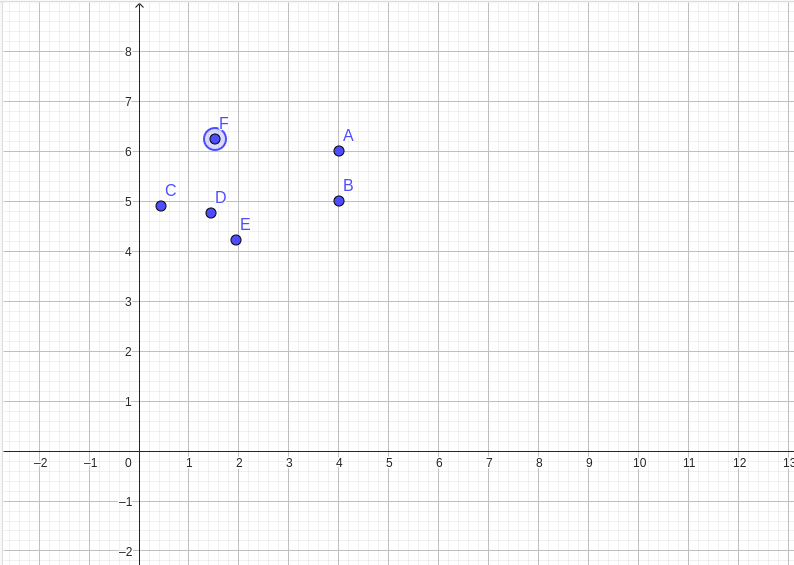
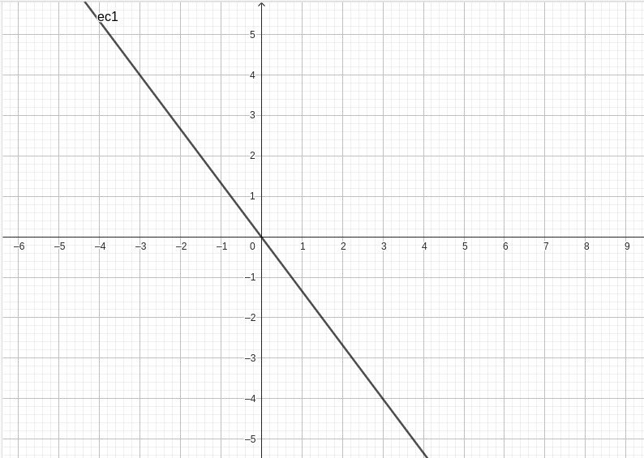
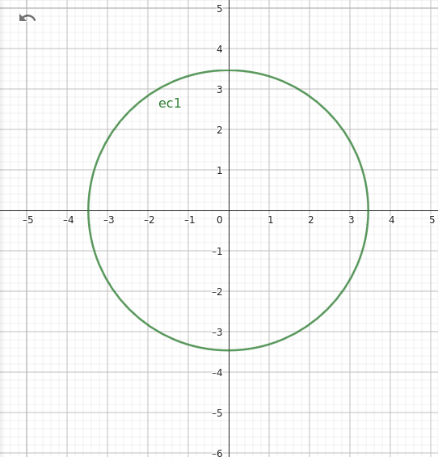
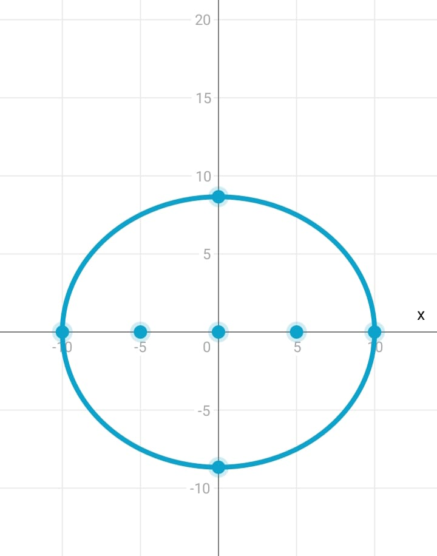
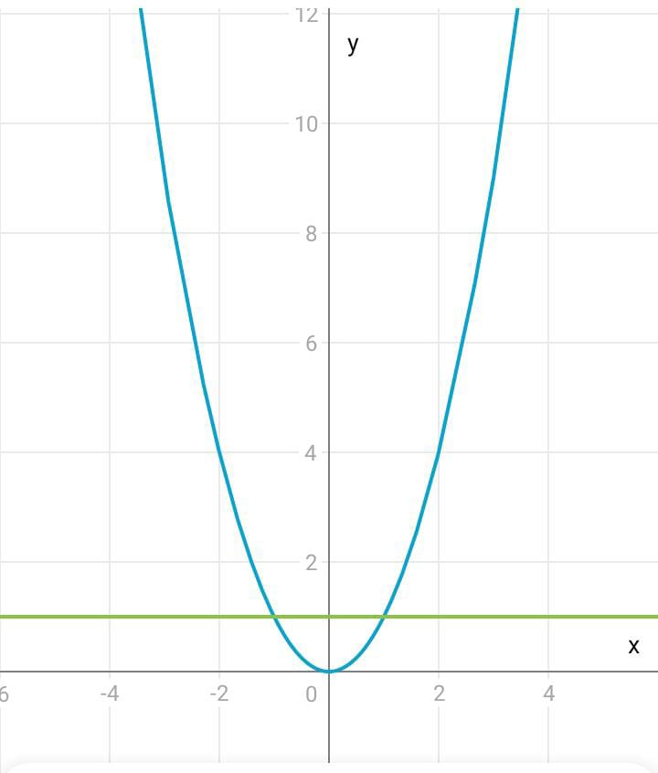
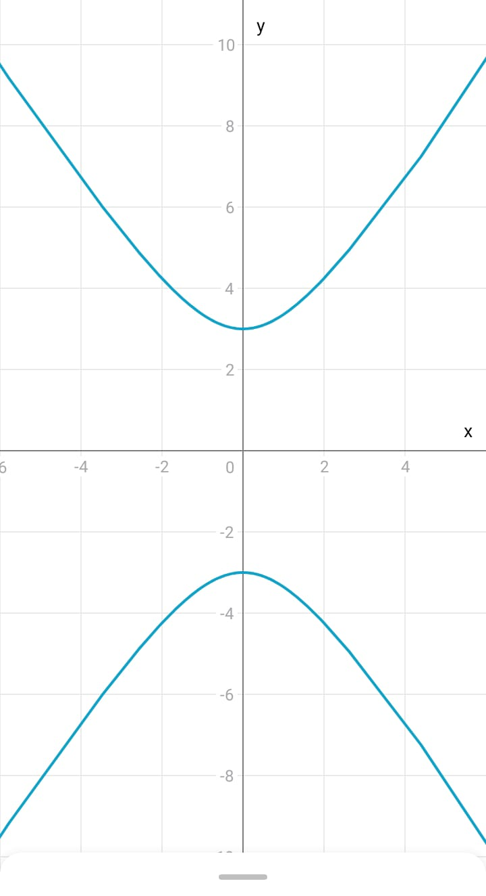

Bienvenido a Aprendiendo Geometría Analítica
¡Explora el fascinante mundo de la geometría analítica! Esta página está diseñada para ayudarte a comprender los conceptos básicos y avanzados de la geometría analítica, una rama de las matemáticas que combina la geometría con el álgebra.
Desde los conceptos fundamentales como puntos, rectas y circunferencias hasta curvas más complejas como la elipse, la parábola y la hipérbola, encontrarás información detallada, recursos útiles y un juego interactivo para fortalecer tus habilidades.
¡Sumérgete en el mundo de la geometría analítica y descubre cómo las ecuaciones y las coordenadas pueden describir formas y figuras geométricas en el espacio!
Conceptos basicos
Punto

Un punto es una ubicación en el espacio que no tiene dimensiones (longitud, anchura o altura).
Recta

Una recta es una serie infinita de puntos que se extiende indefinidamente en ambas direcciones.
Circunferencia

Es la cónica formada por los puntos que equidistan de un punto fijo llamado centro.
Elipse:

Es la cónica formada por los puntos cuya suma de las distancias a dos puntos fijos (focos) es constante.
Parábola

Es la cónica formada por los puntos equidistantes de un punto fijo (foco) y una recta fija (directriz).
Hipérbola

Es la cónica formada por los puntos cuya diferencia de las distancias a dos puntos fijos (focos) es constante.
Tips para resolver ejercicios
- Siempre dibuja un esquema del problema. La geometría analítica se entiende mejor visualmente.
- Recuerda las fórmulas básicas y cómo se derivan. Esto te ayudará a entender mejor los problemas.
- Practica con ejercicios de diferentes niveles de dificultad. La práctica constante es clave para dominar la geometría analítica.
- No te desesperes si no puedes resolver un problema. Tómate un descanso y vuelve a intentarlo más tarde.